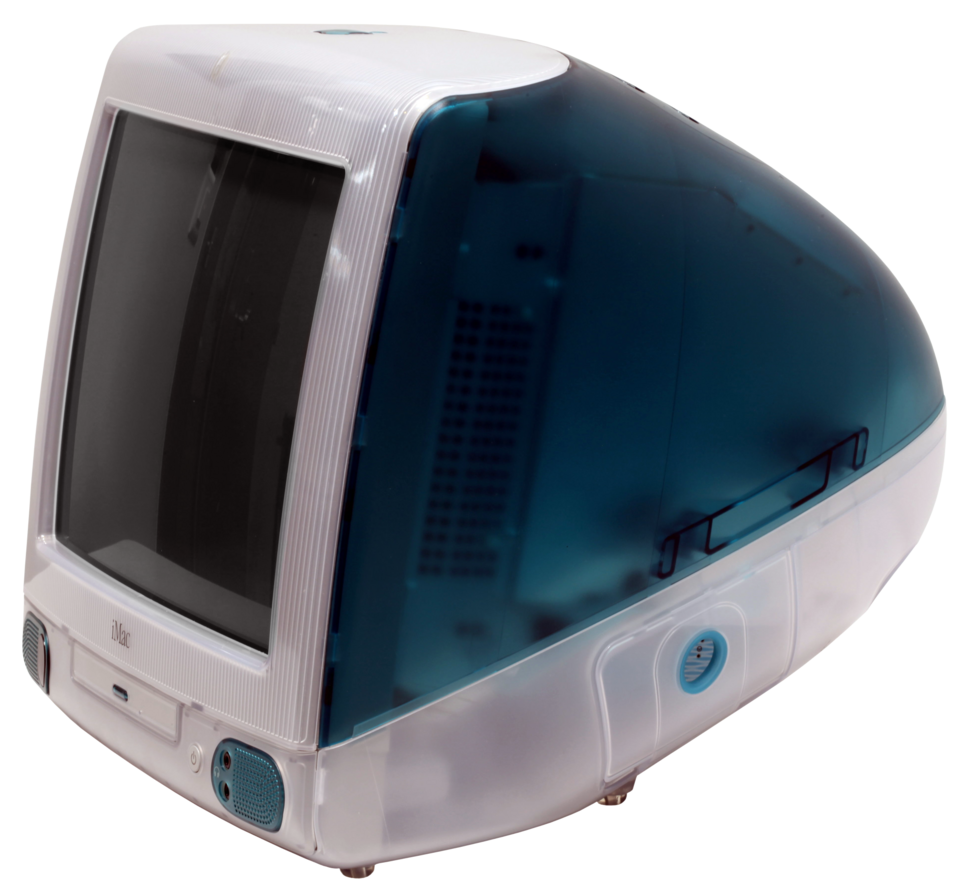
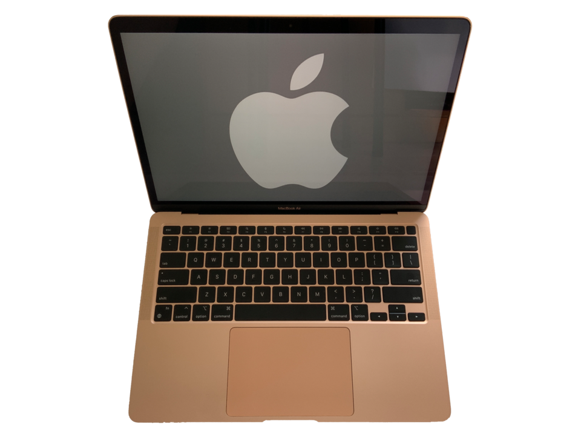

A research based recommendation
Bring Back
the Soul
Why technology lost its personality, and how engineers, organizations, and shareholders can get it back.
Ben Kearl · ENGL · Recommendation Assignment
LEVEL 1: THE PROBLEM
Remember when tech had character?
In 1998, Apple's iMac G3 came in translucent candy colors, and you could see inside the machine. Phones had swappable faceplates and weird shapes. Even cheap gadgets felt like they were made by someone with opinions.
Today most of our devices are black or silver rectangles of glass running apps that all share the same rounded buttons and gray text.
Technology is more powerful than ever. So why does it feel like it has less life?


Photos via Wikimedia Commons: iMac G3 by True Tech Talk Time (CC BY-SA 4.0); laptop by 嘉傑 (public domain).
Setting the stage
Four ideas and four stakeholders
Personality
Distinctive, expressive choices that make a product feel made by someone, for someone, not by a template.
Homogenization
The process through which products, interfaces, and even ideas become more similar over time.
Enshittification
Cory Doctorow's term for platforms getting worse once profit pressure takes over.
User experience
More than "does it work": it includes beauty, surprise, and emotion (Hassenzahl & Tractinsky).
What the research says
Three forces flattening technology
Cultural copying
Kyle Chayka's "AirSpace" essay: shared platforms and shared tools export one default look, from cafés to apps. Copying the market leader becomes the safe choice.
Profit pressure
Doctorow: platforms start generous, then squeeze. Personality is expensive, creates exceptions to maintain, and doesn't fit neatly on a dashboard, so it gets cut first.
Trendy minimalism
Stripping out visual cues can backfire. Nielsen Norman Group found flat interfaces caused "click uncertainty" in eye-tracking tests.
Counterpoint worth respecting: engineers value consistency, and plain products can be the right answer for some users.
Live demo
Minimalism isn't neutral
Design A · weak cues
Welcome back
Get started today
Design B · clear cues
Welcome back
Get started today
For shareholders
Companies that did design well grew faster
McKinsey compared 300 public companies. The top quarter for design quality was measured against everyone else.
Revenue growth per year
Shareholder returns per year
Strong design went along with stronger growth and stronger returns.
Keep in mind: this shows a link, not proof of cause. Good design may be one sign of a well-run company.
The new pressure
AI makes each of us better and all of us alike
Doshi and Hauser asked writers to write short stories with or without AI-generated ideas. AI-assisted stories were rated more creative, especially for less creative writers.
But the group paid a price: stories written with AI ideas were more similar to each other (about 10.7% more similar with one AI idea).
Illustration of the finding. One experiment on short fiction; results may not transfer to every field.
Click the phone to switch the glyph lights
PRODUCT SHOWCASE
A company that bet on personality
Nothing launched its first phone in 2022 with a transparent back and light-up "glyphs." Reviewers noted that from the front it was fairly understated, but the signature gave it character. TechRadar reports founder Carl Pei wanted to bring some joy back into the mobile market.
"Transparency significantly increases the design workload." Adam Bates, design director, via Disegno
That one line is the tension in the whole debate: personality takes work, and they chose to do the work anyway. One phone is not a trend, and reviews are not sales data, but it shows what a deliberate bet looks like.
What should be done
Four recommendations
Implications
What this means for each group
Professionals
Personality is part of the craft, and engineers have more influence over it than they think.
Organizations
How you adopt AI and structure design decisions determines whether products stand out or blend in.
Shareholders
Asking only about efficiency can hide long-term costs. Asking about design quality is a fair investor question.
Technology doesn't have to choose between working well and feeling alive.
The next generation of devices can be remembered not just for how fast they were, but for who seemed to have made them.
Thank you
Any questions?
Ben Kearl · ENGL · Recommendation Assignment
Sources
- Chayka, Kyle. "Welcome to AirSpace." The Verge, 3 Aug. 2016.
- Doctorow, Cory. "The 'Enshittification' of TikTok." Wired, 23 Jan. 2023.
- Doshi, Anil R., and Oliver P. Hauser. "Generative AI Enhances Individual Creativity but Reduces the Collective Diversity of Novel Content." Science Advances, vol. 10, no. 28, 2024.
- Hassenzahl, Marc, and Noam Tractinsky. "User Experience – A Research Agenda." Behaviour & Information Technology, vol. 25, no. 2, 2006, pp. 91–97.
- Moran, Kate. "Flat UI Elements Attract Less Attention and Cause Uncertainty." Nielsen Norman Group, 2017.
- "Nothing Phone 1 Review." TechRadar.
- Norman, Donald A. Emotional Design. Basic Books, 2004.
- Sheppard, Benedict, et al. "The Business Value of Design." McKinsey Quarterly, 25 Oct. 2018.
- "To Be Clear." Disegno.